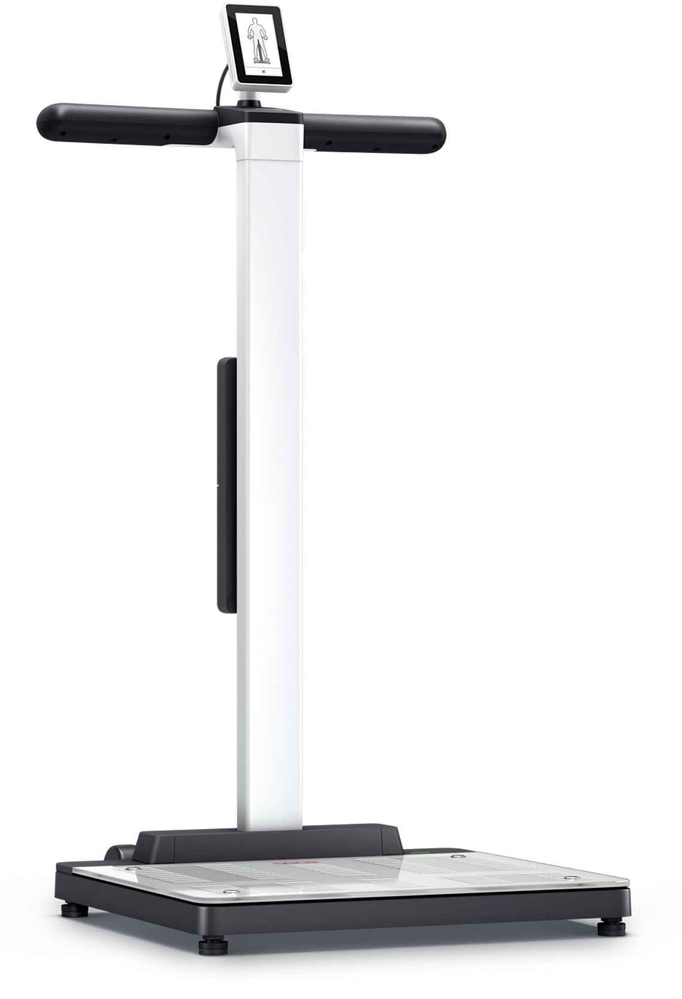

More insight from the appointment you already have
Where could measurement fit into the patient journey your service already delivers?
Explore pathway efficiencyBEYOND WEIGHT
Weight can tell you that something has changed. Body composition can help explain what.

START WITH YOUR QUESTION
The number on the scales is a starting point.
It doesn’t have to be the whole conversation.
For clinicians, that might mean understanding change during treatment. For a service manager, it might mean finding the right place for measurement in an existing pathway. Explore the question that matters to your organisation.
Where could measurement fit into the patient journey your service already delivers?
Explore pathway efficiencyLook beyond kilograms to the respective changes in fat mass and skeletal muscle.
Explore weight managementUse a meaningful baseline and repeat measurements to support the next conversation.
Explore patient engagementConsider additional body composition information within a premium assessment.
Explore private healthStart with the clinical question. Choose the information that is relevant to it.
Explore clinical applicationsDefine the use case, test the workflow and let the evidence guide deployment.
Explore clinical pilotsMORE THAN A NUMBER

Two people with similar weight or BMI can have different body composition.
Looking at fat mass and skeletal muscle gives a different perspective from total bodyweight alone. The useful question is what that information adds to an assessment, a treatment review or a patient conversation.
Understand the role of BMIseca: understanding body composition results (PDF) · NICE NG246: overweight and obesity management
THE ENABLING TECHNOLOGY
Medical body composition analysis, built around the questions behind the weight.
seca lists the mBCA Alpha as an MDR-certified medical device using 8-point bioelectrical impedance analysis. Results include skeletal muscle mass, fat mass, visceral fat and phase angle.
seca describes validation against whole-body MRI for skeletal muscle mass and a four-compartment model for fat-free mass. These are parameter-specific reference methods, not interchangeable clinical tests.
seca UK: mBCA Alpha · seca UK: Analytics 125 · seca UK: myAnalytics · seca UK: clinical validation
READ. CONSIDER. DISCUSS.
CLINICAL GUIDE
A clinical guide to understanding body composition during weight management
Clear questions, practical considerations and referenced clinical context. Read online or keep a printable copy.
Read the guideYOUR NEXT STEP
Explore a clinical application, discuss a pathway or define a practical pilot with your team.
Explore the right fit for your service.
Sources checked 14 September 2026. General clinical education for healthcare professionals. Use current instructions for use and clinical judgement for individual patients.